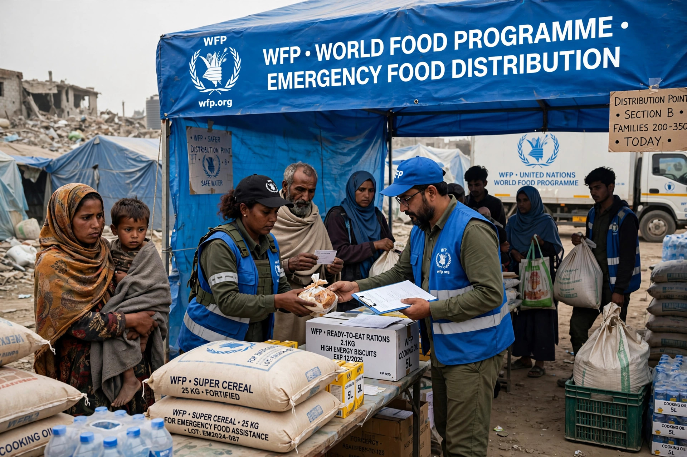

| Abbreviation | WFP |
|---|---|
| Formation | 1961 |
| Headquarters | Rome, Italy |
| Parent | United Nations |
The World Food Programme (WFP) is the food-assistance branch of the United Nations and the world's largest humanitarian organization focused on hunger and food security. Founded in 1961 and headquartered in Rome, it provides food assistance in emergencies and works with communities to improve nutrition and resilience.

WFP operates in more than 120 countries and territories, reaching well over 100 million people in peak years with food, cash-based transfers, school feeding and nutrition programmes. It runs a major logistics operation, including the UN Humanitarian Air Service. It is funded entirely by voluntary contributions from governments, corporations and individuals.
It is governed by a 36-member Executive Board and led by an Executive Director appointed by the UN Secretary-General and the FAO Director-General. WFP works closely with FAO and IFAD, the other Rome-based food agencies.
WFP was awarded the Nobel Peace Prize in 2020 for its efforts to combat hunger and its contribution to bettering conditions for peace in conflict-affected areas.